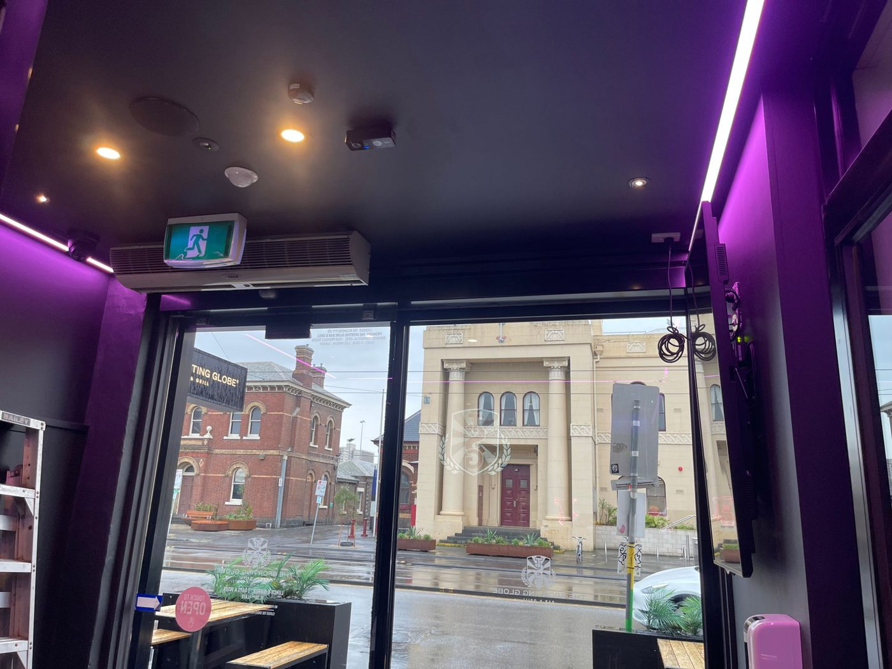

Sports bars & pubs
People counting for sports bars and pubs
Know exactly how many people come through, when they arrive and how long they stay, so you can staff for the rush, stay within capacity and turn more visits into sales.

The challenge
Profit turns on a handful of busy windows.
Licensed venues live and die on a few high-volume windows, Friday and Saturday nights, match days and big fixtures, where demand swings hour to hour. Labour is the largest controllable cost, so matching staff to real door traffic is the single biggest lever on profit, while licensed capacity makes live headcount a legal number too.
Most venues still roster off gut feel and last year’s takings, losing covers to understaffing and wages to overstaffing. Measuring the door fixes both.
What you can measure
The data you get from day one.
Live occupancy
How many people are in the venue right now, against your capacity.
Entries by hour
Patrons in and out, by hour, day and trading period.
Dwell time
How long patrons stay, by area such as bar, dining and gaming.
Peak & game-day spikes
Busiest hours and nights, and the lift from fixtures and events.
Walk-in capture rate
For street-facing venues, how many passers-by actually come in.
Occupancy vs capacity
Time spent near the licensed limit, for compliance and safety.
Conversion
Covers or transactions against footfall, where POS is connected.
Promotion uplift
Footfall before, during and after a promo, not just sales.
Ways to use it
How venue managers and licensees use the data.
Roster to the demand curve
Match bar and floor staff to the real hourly peaks instead of a flat weekend template, and add door cover only in the proven peak window.
Stay within licensed capacity
Track live headcount against your limit, with alerts before you need to go one-in-one-out, and keep a defensible record for licensing.
Plan for the big fixtures
Use footfall by fixture type to pre-plan staff, stock and door policy for known demand spikes.
Measure a promotion
Compare footfall before, during and after a match-day promo or happy hour to judge whether it actually pulled traffic.
Find under-served dayparts
Compare door counts to POS covers by hour to spot high-traffic, low-conversion periods that need more staff or faster service.
Benchmark multiple venues
Use one consistent footfall measure across pubs to compare trading strength and spot the under-performing door.
Business impact
Make more money, save money and improve experiences.
Make more money
- Capture peak demand by putting staff where the traffic is, instead of losing covers to the queue.
- Measure the uplift from game days, promotions and functions, and repeat what works.
- Find high-traffic, low-conversion dayparts and fix service to lift spend per visitor.
- Set trading hours and door policy on real footfall, and prove venue value to sponsors.
Save money
- Roster to actual covers by hour and day, cutting both over and understaffing.
- Match kitchen prep and stock to expected demand.
- Run lighting, heating and cooling to occupancy.
- Avoid penalty-rate and scheduling waste on genuinely quiet shifts.
Improve experiences
- Cut queues at the door and the bar on busy nights.
- Hold the venue within its licensed capacity for safety and compliance.
- Protect service quality in the windows that matter most.
- Keep regulars coming back with a smoother peak-time experience.
This is part of how we help hospitality venues. See the sensors we use and how counting stays anonymous.
FAQ
Questions & answers
Can it monitor capacity for licensing and safety?
Yes. Live occupancy is tracked against your licensed or safe capacity, with alerts as you approach the limit and a history you can show licensing authorities.
Does it use cameras that identify patrons?
No. Counting is anonymous and processed on the device, so no images or personal information leave the venue.
How accurate is it on a packed Saturday?
Good sensors hold high accuracy through crowds, but we validate against your own door data in the first weeks so you trust the number before you roster to it.
Can it combine with our POS?
Where point-of-sale data is available, visits are combined with sales to show conversion and sales per visitor by hour.
What drives the payback?
Mostly labour matched to demand, since labour is 25 to 35 percent of revenue, plus captured peak and game-day sales. Build the case on your own before-and-after rosters and takings.
See your places in a new light.
Book a 30-minute walkthrough and we'll scope a pilot for one of your sites: sensors, installation, software and insights in one agreement.